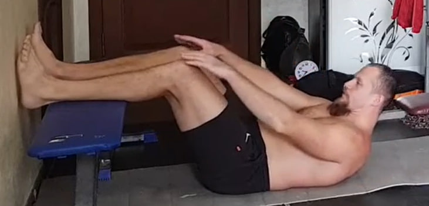
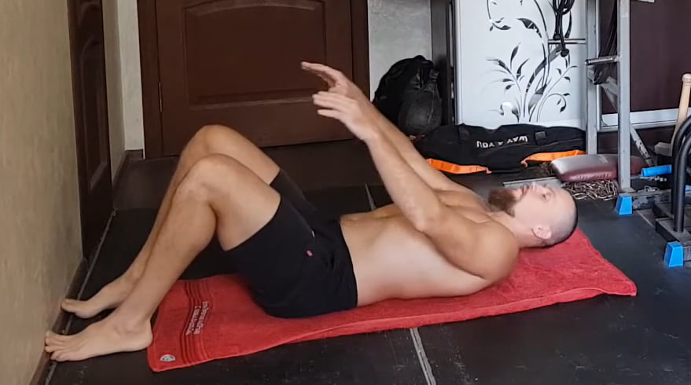
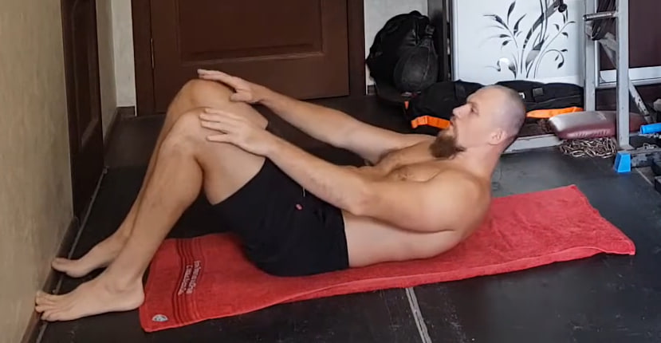
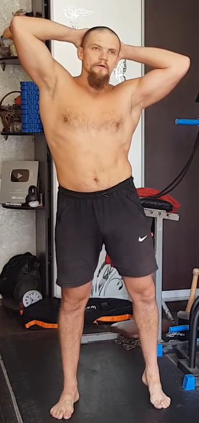

1. Extensiones isométricas de pierna hacia atrás para glúteo

Ponte de pie, mantén la espalda completamente recta y evita inclinarte hacia adelante. Lleva una pierna recta hacia atrás y crea la máxima tensión posible en el glúteo. Mantén la contracción durante 10 segundos, vuelve a la posición inicial y cambia de pierna. Realiza 10 repeticiones por cada lado.
2. Zancadas con pausa isométrica

Da un paso amplio hacia adelante y baja a una zancada, llevando la rodilla trasera casi hasta el suelo. El torso permanece vertical y la rodilla delantera mira estrictamente hacia adelante, sin colapsar hacia dentro.
En la posición baja congela el movimiento y mantén una tensión fuerte durante 10 segundos, respirando de forma tranquila y controlada. Después sube con control, cambia de pierna y repite. Haz 10 repeticiones por cada lado.
3. Elevación isométrica de pierna recta al frente (90°)

Ponte de pie con la espalda recta y el abdomen firme. Eleva una pierna recta al frente hasta aproximarte a un ángulo de 90° con el cuerpo (o lo más alto que puedas sin encorvarte). Mantén la pierna lo más estirada posible y con el pie activo. Sostén la posición 10 segundos, baja con control y repite. Realiza 10 repeticiones por cada lado.
4. Rodilla al pecho de pie (isométrico)

Ponte de pie con la espalda recta y el abdomen firme. Eleva una rodilla hacia el pecho y abrázala con ambas manos (por debajo de la rodilla o sobre la tibia), acercándola lo máximo posible sin encorvar la espalda. Mantén la presión y la tensión 10 segundos, baja con control y cambia de pierna. Realiza 10 repeticiones por cada lado.
5. Extensión hacia atrás de pie (apertura de pecho)

Ponte de pie con los pies a la anchura de los hombros. Coloca las manos en la cintura o sobre la parte alta de las caderas para dar soporte. Aprieta ligeramente el abdomen y los glúteos para estabilizar la zona lumbar. Lleva el pecho hacia arriba y atrás, abre los hombros y mira hacia el techo, sin “romper” la cintura ni sentir dolor. Mantén la posición 10 segundos, vuelve al centro con control y repite. Realiza 10 repeticiones.
6. Masaje abdominal en apnea (vacío abdominal)


Apoya las palmas sobre las rodillas e inclina el torso hacia delante. Exhala por completo, mete el abdomen al máximo “debajo de las costillas” y eleva las costillas, manteniendo la respiración en pausa. Sin inhalar, empieza a soltar el abdomen hacia abajo (inflándolo lo más posible) y vuelve a meterlo hacia dentro.
Haz estas ondas tantas veces como puedas en una sola apnea. La próxima vez intenta hacer una repetición más.
7. Respiración diafragmática con piernas elevadas

Túmbate boca arriba y apoya las piernas en la pared con una ligera inclinación, de modo que la espalda y la zona lumbar queden relajadas sobre el suelo. Suelta completamente el abdomen y deja que se vuelva blando.
Respira solo con el diafragma: al inhalar, el vientre sube; al exhalar, baja de forma natural sin esfuerzo. Mantén esta respiración durante 1–2 minutos, hasta que se vuelva profunda y estable.
8. Crunch con piernas elevadas
Túmbate boca arriba y eleva las piernas (en la versión clásica: rodillas flexionadas y tobillos cruzados). Haz el crunch como uno normal: despega solo hombros y parte alta de la espalda del suelo, sin tirar del cuello. Exhala al subir e inhala al bajar. Realiza 10 repeticiones.
9. Crunch clásico (piernas abajo)
 Túmbate boca arriba con las rodillas flexionadas y los pies apoyados en el suelo (o en la pared, como en la imagen). Sube el torso despegando solo hombros y parte alta de la espalda, sin tirar del cuello. Exhala al subir (un exhalo por cada repetición) e inhala al bajar. Haz 10 repeticiones.
10. Isometría lateral para el dorsal ancho
Coloca las manos detrás de la cabeza con los codos bien abiertos. Inclina el torso ligeramente hacia un lado sin girar las caderas ni el pecho. Desde esta postura contrae con fuerza el dorsal ancho del lado hacia el que te inclinas, mientras el lado contrario se estira de forma natural.
Mantén la contracción unos segundos buscando el máximo acortamiento muscular sin perder la verticalidad general del cuerpo. Vuelve al centro y repite hacia el otro lado hasta completar 10 repeticiones por cada lado.
11. Fondos en banco para tríceps con pausa


Con las manos en el borde de un banco y las piernas extendidas al frente, baja flexionando los codos y luego sube sin bloquearlos por completo. En la parte alta mantén la tensión durante 10 segundos, con los codos ligeramente doblados. Repite 10 veces controlando hombros y pecho.